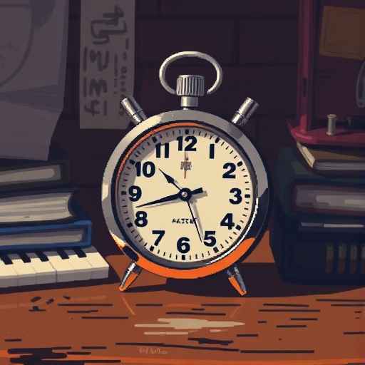
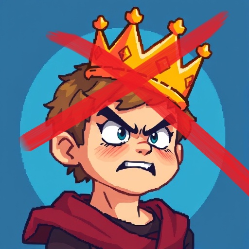
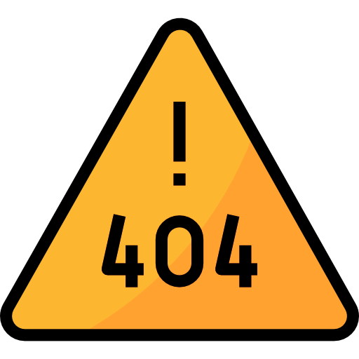

Simple Stopwatch
A simple stopwatch created using HTML, CSS, and JavaScript. It can start, stop, and reset the timer easily.

Quiz Of Non-Kings
A simple program written in Python, inspired by the popular game "Quiz of Kings".

To-Do List
I haven't written this one yet, but if I were to create it, I would use Python to develop it!